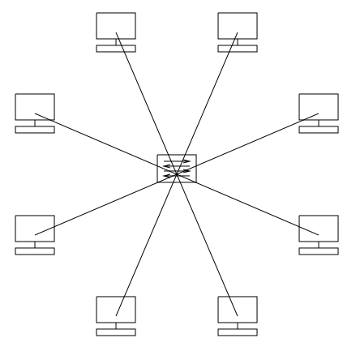
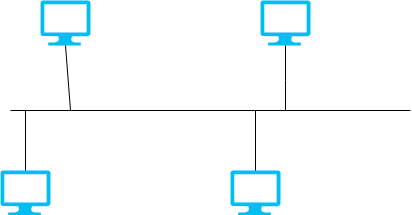
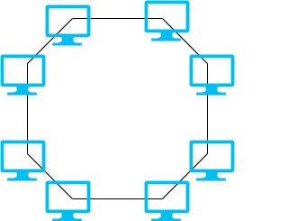

| № | Рисунок | Описание |
|---|---|---|
| 1 |  |
Все устройства подключены к центральному узлу. Простая диагностика, но отказ центра даёт общий сбой. |
| 2 |  |
Все устройства подключены к одной общей линии. Экономична, но при обрыве шины сеть полностью отключается. |
| 3 |  |
Устройства соединены в замкнутый круг. Данные передаются по кольцу последовательно. Устойчива к нагрузке, но сбой одного узла может нарушить всю сеть. |